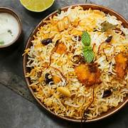
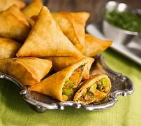
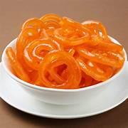
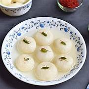

Hidangan Ikonik India

Biryani
🌶️🌶️Nasi berbumbu rempah yang dimasak bersama daging ayam, kambing, atau seafood. Salah satu hidangan paling ikonik India dengan variasi di setiap daerah.

Butter Chicken
🌶️Ayam berbumbu dalam saus tomat creamy berbasis mentega dan krim. Hidangan yang paling digemari wisatawan mancanegara saat berkunjung ke India.

Rogan Josh
🌶️🌶️🌶️Kari daging kambing khas Kashmir yang kaya rempah dengan warna merah menggoda dari cabai Kashmiri dan paprika. Hidangan istimewa dari utara India.

Palak Paneer
🌶️Keju segar (paneer) dalam saus bayam berbumbu yang creamy. Hidangan vegetarian yang kaya nutrisi dan favorit di seluruh India.

Samosa
🌶️Pastri goreng segitiga berisi kentang berbumbu, kacang polong, dan kadang daging. Jajanan paling populer di India, tersedia di setiap sudut kota.

Pani Puri
🌶️🌶️Kulit tipis renyah diisi dengan campuran kentang, kacang, dan air asam pedas beraroma mint. Jajanan jalanan yang menggugah selera!

Vada Pav
🌶️🌶️Disebut "burger India", berupa roti pav berisi bola kentang berbumbu yang digoreng. Makanan jalanan ikonik dari kota Mumbai.

Masala Chai
☕Teh susu berbumbu dengan jahe, kapulaga, kayu manis, dan cengkeh. Minuman nasional India yang menghangatkan, diminum di setiap waktu sepanjang hari.

Mango Lassi
🥭Minuman yogurt berbasis mangga yang menyegarkan. Paduan sempurna antara segar, manis, dan sedikit asam. Pelengkap sempurna hidangan pedas India.

Gulab Jamun
🍯Bola susu kental yang digoreng lalu direndam dalam sirup gula beraroma mawar dan kapulaga. Dessert paling populer di anak benua India.

Jalebi
🍯Adonan spiral renyah yang digoreng dan dicelup dalam sirup gula. Berwarna oranye cerah dan sangat manis, biasa dimakan saat festival.

Rasgulla
🍯Bola keju cottage lembut yang dimasak dalam sirup gula ringan. Dessert khas Bengal Barat, terkenal dengan tekstur spons yang kenyal dan lembut.